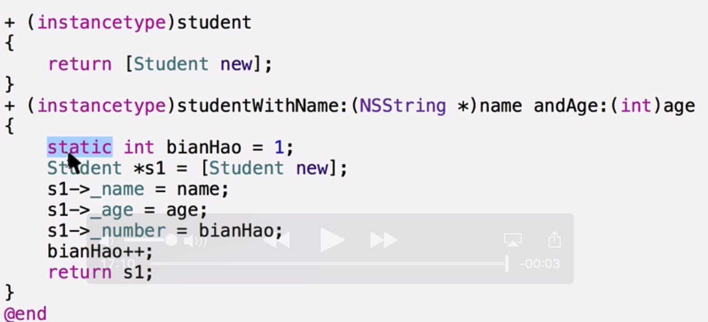

继承与多态
static关键字
C语言中的static
- 修饰局部变量
- 修饰全局变量
- 修饰函数
OC中的static关键字
- static不能修饰属性，也不能修饰方法
- static可以修饰方法中的局部变量
如果方法中的局部变量被static修饰，那么这个变量就会变成静态变量，存储在常量区，当方法执行完毕不会被回收。下次再执行这个方法的时候，直接使用而不用再次声明。

- 如果方法的返回值是当前类的对象，那么方法的返回值就写为instanceType
什么时候用到static

self关键字
- self是一个指针；
- 在对象方法中self指向当前对象；
在类方法中self指向当前类；
作用：
- 可以显式的访问当前对象的属性； self -> 属性
- 可以使用self来调用当前对象的其他的对象方法；
私有属性和私有方法
- 将属性定义在@implementation之中和将属性定义在@interface之中并标记为@private唯一的区别： 提示和不提示
- 都不能被外界访问
- 方法不写声明，只写实现，那么这个方法就是一个私有方法；
- 私有方法只能在本类的其他方法中调用，不能被外界调用